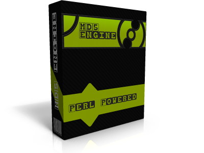

[+]Topic: Code [+]Von: Neo2k8 [+]Return: Code
MD5 Engine 1.0 Beta Mit diesem Script könnt ihr Online MD5 Hashes cracken lassen. Es bietet in dieser Version folgende Funktionen : =>Wordlisten mit der beigelegten hasher.pl in MD5 Wordlisten zu konvertieren =>Wordlisten hochladen funktion =>Cracken per Wordlist (für speziele PW`s, die andere Cracker net haben zb. ;) ) =>Gdata cracker ( Greift auf die Datenbank von Gdata zu ( Crawl Hash )) =>Online Cracker (Crawl Bot) erweiterbar auf andere OnlineCracker =>Kleines NewsSystem
Package: MD5 Cracking Engine